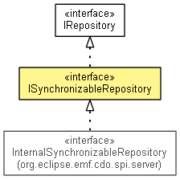

org.eclipse.emf.cdo.server
Interface ISynchronizableRepository
- All Superinterfaces:
- CDOCommonRepository, CDOTimeProvider, IAdaptable, IContainer<Object>, ILifecycle, INotifier, IQueryHandlerProvider, IRepository
- All Known Subinterfaces:
- InternalFailoverParticipant, InternalSynchronizableRepository
- public interface ISynchronizableRepository
- extends IRepository

A repository with the ability to synchronize its content with another repository.
- Since:
- 3.0
- No Implement
- This interface is not intended to be implemented by clients.
- No Extend
- This interface is not intended to be extended by clients.
| Methods inherited from interface org.eclipse.emf.cdo.server.IRepository |
addCommitInfoHandler, addHandler, getBranchManager, getCommitInfoHandlers, getCommitInfoManager, getHandlers, getLastCommitTimeStamp, getLockingManager, getLockManager, getPackageRegistry, getProperties, getQueryHandlerProvider, getRevisionManager, getSessionManager, getStore, removeCommitInfoHandler, removeHandler, setInitialPackages, validateTimeStamp, waitForCommit |
| Methods inherited from interface org.eclipse.emf.cdo.common.CDOCommonRepository |
getCreationTime, getIDGenerationLocation, getName, getObjectIDTypes, getRootResourceID, getState, getStoreType, getType, getUUID, isEnsuringReferentialIntegrity, isSerializingCommits, isSupportingAudits, isSupportingBranches, isSupportingEcore, waitWhileInitial |
getSynchronizer
IRepositorySynchronizer getSynchronizer()
getReplicatorSession
ISession getReplicatorSession()
getLastReplicatedBranchID
int getLastReplicatedBranchID()
getLastReplicatedCommitTime
long getLastReplicatedCommitTime()
hasBeenReplicated
boolean hasBeenReplicated()
- Since:
- 4.2
goOnline
void goOnline()
- Since:
- 4.1
goOffline
void goOffline()
- Since:
- 4.1
Copyright (c) 2011, 2012 Eike Stepper (Berlin, Germany) and others.